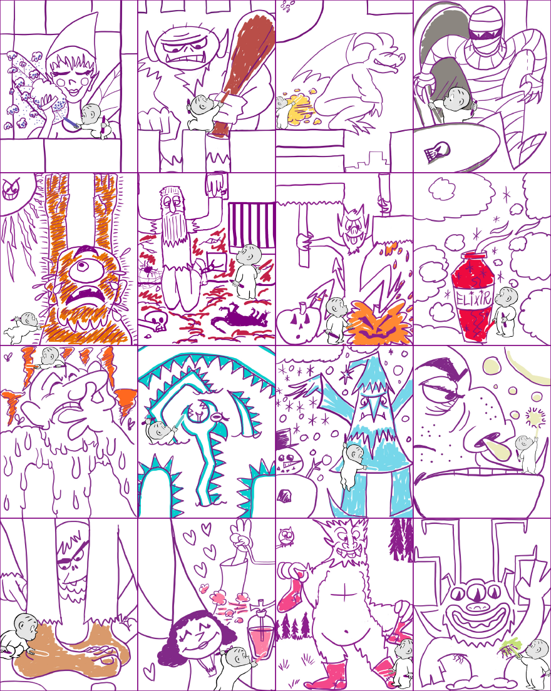

Sixteen of the twenty drawings ("the ones he can fit into his box") clue the name of the scent of one of Crayola's Silly Scents crayon colors.
Specifically, the part of the drawing that the color is named for is colored in that crayon's color.
| Color Name | Color | Hex Code |
|---|---|---|
| Alien Armpit | Yellow Green | #C5E17A |
| Big Foot Feet | Tan | #D99A6C |
| Booger Buster | Spring Green | #ECEBBD |
| Dingy Dungeon | Maroon | #C32148 |
| Gargoyle Gas | Dandelion | #FED85D |
| Giant's Club | Chestnut | #B94E48 |
| Magic Potion | Red | #ED0A3F |
| Mummy's Tomb | Gray | #8B8680 |
| Ogre Odor | Red Orange | #FF681F |
| Pixie Powder | Blue Violet | #6456B7 |
| Princess Perfume | Tickle Me Pink | #FC80A5 |
| Sasquatch Socks | Violet Red | #F7468A |
| Sea Serpent | Robin's Egg Blue | #00CCCC |
| Smashed Pumpkin | Orange | #FF8833 |
| Sunburnt Cyclops | Mango Tango | #E77200 |
| Winter Wizard | Sky Blue | #76D7EA |
| Alien Armpit | Big Foot Feet | Booger Buster | Dingy Dungeon |
| Gargoyle Gas | Giant's Club | (Gnome's Nose) | Magic Potion |
| Mummy's Tomb | Ogre Odor | (Pirate's Pegleg) | Pixie Powder |
| Princess Perfume | Sasquatch Socks | Sea Serpent | Smashed Pumpkin |
| Sunburnt Cyclops | (Vampire's Coffin) | Winter Wizard | (Witch's Wart) |
The drawings are ordered alphabetically by scent name (or, in the case of the four made-up colors in parentheses, by a reasonably inferrable name).
Rearrange the 16 Silly Scents colors into a 4 x 4 panel alphabetically by color ("the more familiar versions").
| Color Name | Color |
|---|---|
| Pixie Powder | Blue Violet |
| Giant's Club | Chestnut |
| Gargoyle Gas | Dandelion |
| Mummy's Tomb | Gray |
| Sunburnt Cyclops | Mango Tango |
| Dingy Dungeon | Maroon |
| Smashed Pumpkin | Orange |
| Magic Potion | Red |
| Ogre Odor | Red Orange |
| Sea Serpent | Robin's Egg Blue |
| Winter Wizard | Sky Blue |
| Booger Buster | Spring Green |
| Big Foot Feet | Tan |
| Princess Perfume | Tickle Me Pink |
| Sasquatch Socks | Violet Red |
| Alien Armpit | Yellow Green |
| Pixie Powder | Giant's Club | Gargoyle Gas | Mummy's Tomb |
| Sunburnt Cyclops | Dingy Dungeon | Smashed Pumpkin | Magic Potion |
| Ogre Odor | Sea Serpent | Winter Wizard | Booger Buster |
| Big Foot Feet | Princess Perfume | Sasquatch Socks | Alien Armpit |
This will make elements in the drawings combine to spell the message THE B IN BLT, which leads to the answer BACON.
